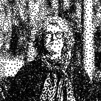
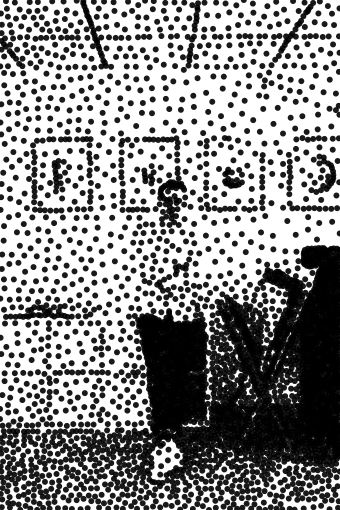
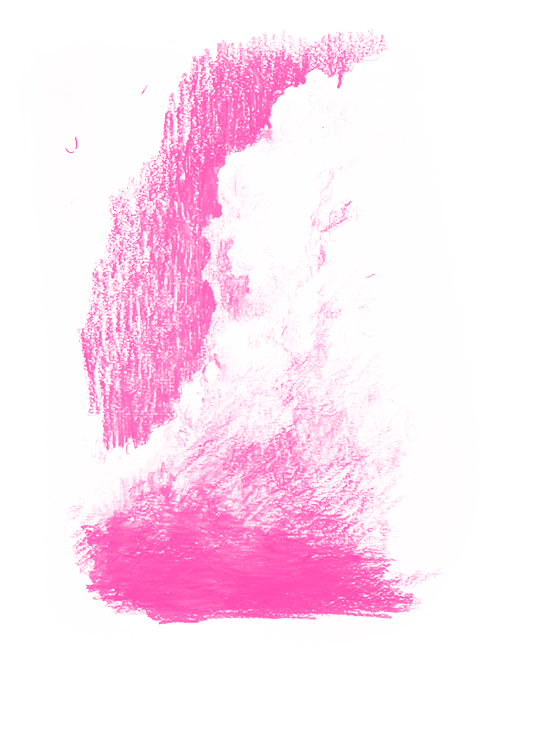
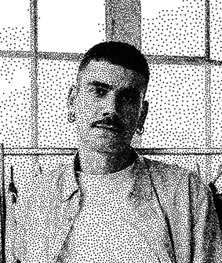
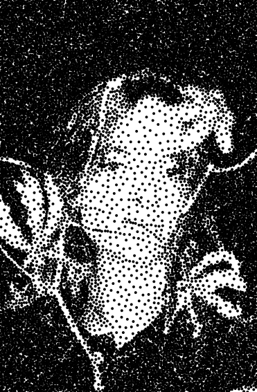
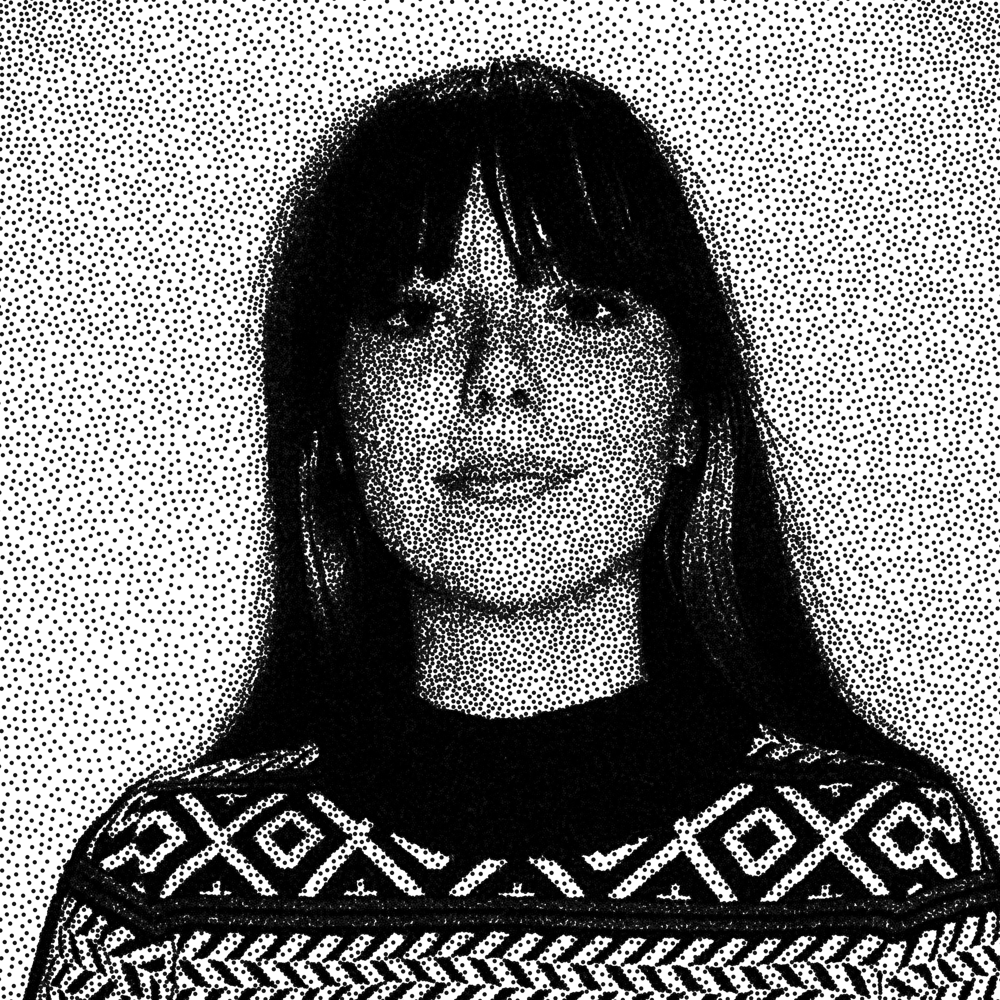
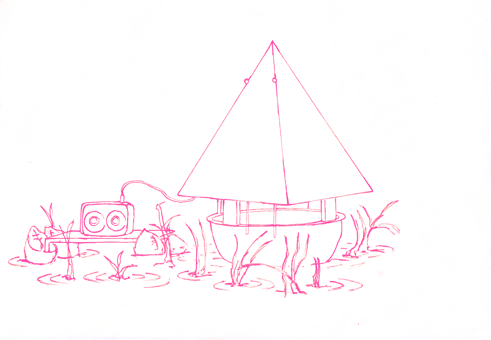
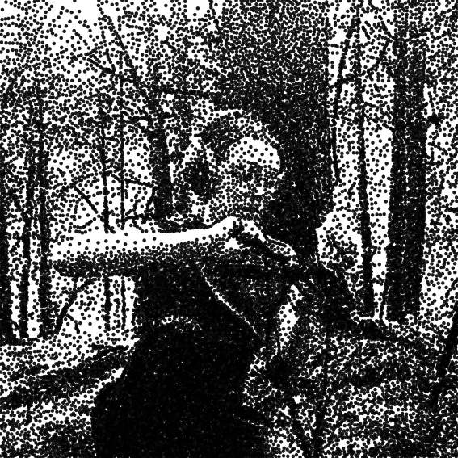

#1.
Design manager
Nathalie Arnould

Année : Depuis 1996
Durée : 38:00
Format : Métier
Mots-clés : Espace public, commande publique, biennale du∏
design

#2.
Sentiers
Studio Rémi Bouhaniche

Année : 2019
Durée : 20:00
Format : Design d’objet
Mots-clés : Vignes, territoire, paysage

#3.
Le temps
de la production
Thibault Huguet

Année : Depuis 2014
Durée : 01:15:00
Format : Design d’objet
Mots-clés : Artisanat, collaboration
auto-édition

#4.
Positioning the body
as a learning tool
Gabriel Fontana

Année : 2019 - en cours
Durée : 36:00
Format : Essai, sport
Mots-clés : Pédagogie queer, normes sociales, jeu

#5.
La recherche
de matière
Foghar Studio

Année : Depuis 2020
Durée : 30:00
Format : Recherche
Mots-clés : Feuilles mortes, matériau durable

#6.
Ce qu’il reste
à la nuit
Mathilde Reynaud

Année : 2024
Durée : 24:00
Format : Film, installation, jeu vidéo
Mots-clés : Science-fiction, corps célestes,
espace

#7.
Design circulaire
Juliette Laroche

Année : Depuis 2022
Durée : 17:00
Format : Film, installation, jeu vidéo
Mots-clés : Reconsidérer, économie sociale et
solidaire

#8.
L’expédition Utoupie
Cécile Poulat

Année : 2025 - en cours
Durée : 24:00
Format : Film, installation, jeu vidéo
Mots-clés : Artisanat, machine révolutive,
utoupies

#9.
Murmure des marais
Jessica Perez

Année : 2025 - en cours
Format : Son, vidéo
Mots-clés : Instruments, zone humide, éléments
naturels
Durée : 27:00